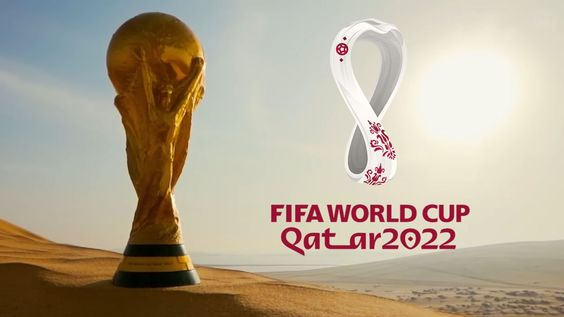
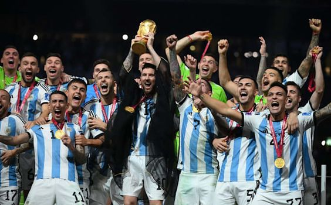

La Copa Mundial de la FIFA Catar 2022 (en árabe, كأس العالم لكرة القدم قطر 2022) fue la vigésima segunda edición de la Copa Mundial de Fútbol masculino organizada por la FIFA. Esta edición del evento se desarrolló del 20 de noviembre al 18 de diciembre en el otoño de Catar, que consiguió los derechos de organización el 2 de diciembre de 2010. Esta fue la tercera vez que el torneo se disputó en el continente asiático tras la edición de 2002 jugada en Corea del Sur y Japón y la de Rusia 2018 (aunque esta última contaba con una sola sede en territorio asiático) y la primera que se celebró en Asia Occidental. También, por primera vez, el torneo tuvo lugar en Oriente Próximo, en un país árabe y de mayoría musulmana, así como el de menor extensión territorial.
En octavos, Sudamérica clasificó a los dos equipos que participaron de esa instancia, pero en cuartos de final solo sobrevivió Argentina, que pasó a las semifinales junto a dos europeos: Francia y Croacia, mientras que Marruecos se convirtió en la primera selección africana en alcanzar dicha instancia.
El campeón fue Argentina, liderado por Lionel Messi, que derrotó en la final por 4-2 en los tiros desde el punto penal al vigente campeón del mundo, Francia, luego de haber empatado 3-3, siendo la cuarta selección del mundo que se consagra fuera de su continente y la segunda de Sudamérica en conseguirlo en Asia. De esta forma, se coronó campeón por tercera vez en su historia después de treinta y seis años (la última ocasión había sido en México 1986). Asimismo, se terminó una racha de cuatro campeones europeos consecutivos, la más larga de un mismo continente.
Fue la final perfecta para una inolvidable Copa Mundial de la FIFA™, con Argentina y Francia protagonizando un clásico instantáneo en el estadio de Lusail. La Albiceleste parecía estar en control durante la mayor parte del encuentro y tradujo su diferencia en el resultado con dos goles antes del entretiempo, gracias a Lionel Messi y a Ángel Di María. Pero Francia reaccionó con una emocionante remontada inspirada por los dos goles de su estrella, el imparable Kylian Mbappé. En una prórroga de infarto, Argentina recuperó la ventaja con el segundo gol de Messi, pero Mbappé volvió a empatar. Finalmente, el partido se decidió en la tanda de penales, y Gonzalo Montiel rubricó el histórico triunfo de Argentina.
